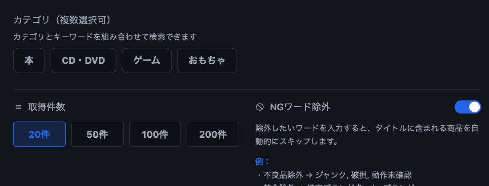
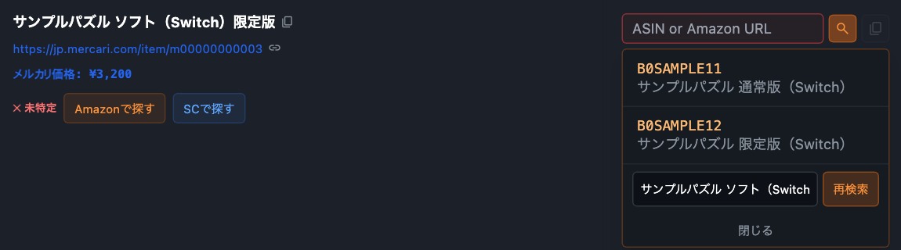
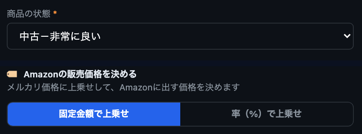
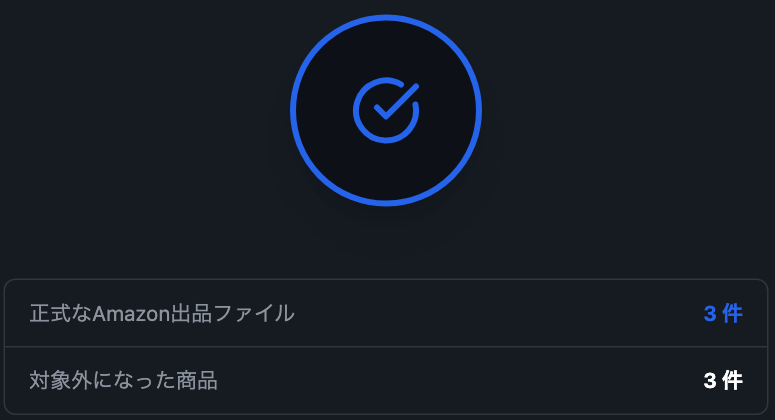

Amazon物販をこれから始める方へ
はじめてのAmazon物販を、
迷わず一歩ずつ。
メルカリの商品探しから、Amazon用の出品ファイル作成まで。画面の順番に沿って進められます。
動画は音声なしです。画面の内容はすべてサンプルです。
ご利用には、販売担当者から案内されたライセンスキーが必要です。
インストールの手順を見る（配布ページのReadMe）
はじめての方が、最初に迷うこと
-
何を探せばよいか
分からない -
Amazonの同じ商品を
見つけられるか不安 -
出品用ファイルの
作り方が分からない
4つのステップで、出品ファイルができます
-

ステップ1 候補を集める
キーワードやメルカリの検索結果から、商品の情報を一覧にします。
-

ステップ2 Amazonの商品を確認する
候補を見比べて、同じ商品を選びます。番号を直接入力することもできます。
-

ステップ3 状態と価格を決める
状態は日本語の選択肢から選び、価格の決め方を設定します。
-

ステップ4 出品ファイルを作る
設定に合った商品だけのファイルができます。登録はご自身でSeller Centralから行います。
はじめてでも進めやすい理由
-
商品選びの初心者向けガイド
扱いやすい商品と、慣れるまで避けたい商品をカテゴリーごとに説明しています。
-
画面の順番に沿って進められる
次に何をすればよいかが、いつも画面に出ています。
-
入らなかった理由が分かる
出品ファイルに入らなかった商品は、理由ごとに確認できます。
-
出品後の変化を確認できる
仕入れ元のメルカリ側の売り切れや値動きを確認できます。
実際の画面で見る
MerFoxが手伝うこと、ご自身で確認すること
MerFoxが手伝うこと
- 商品候補を集める
- Amazon商品との確認を助ける
- 状態・価格・説明文を設定する
- 出品ファイルを作る
- 仕入れ元の変化を確認する
ご自身で確認すること
- 商品が同じものか確認する
- 仕入れるかどうかを判断する
- Amazonへ登録する
- 注文後の購入・検品・発送を行う
- 必要に応じてAmazonの出品を停止する
利益や販売の結果を保証するものではありません。Amazon側の審査で、ファイルが受け付けられない場合があります。
始める前に必要なもの
- Apple Silicon搭載Mac
- Amazon出品用アカウント
- MerFoxライセンスキー
（販売担当者から案内）
対象は本・CD・DVD・ゲーム・おもちゃの中古品です。
よくある質問
転売経験がなくても使えますか
はい。画面が順番に並んでいて、その通りに進められます。商品の選び方は、アプリに入っている初心者向けガイドで確認できます。
ASINとは何ですか
Amazonの商品を見分ける10桁の番号です。MerFoxでは候補から選ぶか、番号やAmazonの商品ページのURLを入力します。
出品まで自動ですか
いいえ。MerFoxが作るのは出品用のファイルまでです。内容を確認して、Seller Central（Amazonの出品者用の管理画面）で登録するのはご自身です。
どの商品から始めればよいですか
本・CD・DVD・ゲームソフトの通常版など、商品名や型番がはっきりした単品から始めると迷いにくくなります。
ライセンスキーはどこで受け取れますか
販売担当者からご案内します。MerFoxを使い始めるときに、アプリの画面でライセンスキーを入力します。1つのキーで使えるMacは1台です。
Windowsで使えますか
現在の配布版は、macOS（Apple Silicon）向けです。
利益は保証されますか
保証はしません。利益を計算して表示する画面はありません。手数料や送料はご自身で確認してください。
候補が見つからない場合はどうしますか
Amazonで商品ページを確認し、ASINまたは商品ページのURLを直接入力できます。同じ商品が無ければ空欄のままにすると、出品ファイルに入りません。
困った場合はどうしますか
アプリの「設定」画面から、操作ガイドとサポート資料を開けます。解決しないときは、販売担当者へお問い合わせください。
まずはMerFoxの流れを確認する
ご利用には、販売担当者から案内されたライセンスキーが必要です。
インストールの手順を見る（配布ページのReadMe）